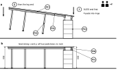
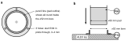
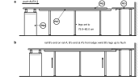
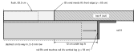
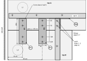
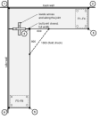

H · Joining and positioning the countertops
Two people. Both tops are face down with legs, feet and rails fitted, every OLOV pre-set to 80.2 cm, every pad set with the foot height gauge (102 mm). The ALEX units stand near their places with no rings on yet.
| Parts | Hardware | Tools |
|---|
| P01 top A · P02 top B · P03 ALEX 1 · P04 ALEX 2 · P05 OLOV leg · P06 rail A · P07 rail B · P08 strut fitting × 2 · P09 foot · P10 ring × 8 · P11 mending plate × 2 (joining) |
H06 #6 × 5/8 in flat head × 24 (rings) · H03 #10 × 1 in × 2 (rail B holes 1, 2) · H04 #10 × 5/8 in × 8 · H05 #10 washer × 8 · H08 3/8-16 × 1-1/2 in bolt × 6 · H09 3/8 washer × 12 · H10 3/8-16 nylon nut × 6 |
Drill guide (SET tower, pucks 12 ALEX, 25 RAIL and 12 PLATE), 5/64 and 1/8 in bits, sharp pencil, wall gauge, Robertson #2 on a 3 in extension, level, straightedge, tape, torque wrench or 15 cm wrench |
1
Stand top A on the bare ALEX 1. The ALEX units have no rings yet. With a helper, turn top A over and stand it on its legs with its four pads on the bare ALEX top: lower the ALEX end first, then the leg end. Push the ALEX unit, never the top, until 3.5 cm of top shows all round the cabinet and the wall gauge's ALEX 65 leg (6.5 cm) just fits between the wall and the ALEX.

Fig. H-1 · Top A from the front (1:26). a: step 1, ALEX end first, the pads land on the bare ALEX top; b: step 3, back on its legs with the pads in their rings, level, 83.0 cm at both ends. Rail A hangs under the top; it never touches ALEX 1.
!Push the cabinet, never the top.
Top A is only positioned by moving ALEX 1 under it. Once the rings are on (step 2) and the pads are in them, top A cannot be pushed at all: if anything is off, lift the ALEX end a few millimetres and move the ALEX unit.
2
Fit the rings by tracing.
- With top A standing where step 1 left it, draw round each of the four pads on the ALEX top with a sharp pencil.
- Two people: lift top A off and lay it face down on the blanket.
- Set a ring (P10) on each pencil circle, flange down. Look down through its open bottom and move it until the pencil line shows all the way round inside the ⌀52 mm bore.
- Hold it there. Start the three 5/64 in pilots through the ring's own holes, 3–4 mm deep, lift the ring, and finish each pilot 12 mm deep with the drill guide's 12 ALEX puck.
- Put the ring back and drive three H06 #6 × 5/8 in flat-head screws.

Fig. H-2 · a: a ring on its pencil circle, from above (1:2); b: the pad drops into the ring, section (1:2.4). Ring bore 52 mm VERIFIED (from its geometry file); pad 50 mm MEASURE ON HARDWARE. The ALEX corner template is a check on the ring positions, not the method.
3
Stand top A again and level it. Two people, ALEX end first as in step 1: the pads drop into the rings. Level along x and along y by turning the OLOV feet and the round feet until it reads flat and all four pads bear with no rock. Target: surface 83.0 cm above the floor at every corner. SOURCE-DEFINED
!Once the pads are in the rings, top A cannot be pushed.
If it is not 3 cm off a wall, lift the ALEX end a few millimetres and slide the ALEX unit, not the top. The wall gauge's EKB 30 leg (3 cm), or a 3 cm offcut, against the wall is the easiest gauge.
83.0 cm assumes ALEX units 70.0 cm tall ASSUMPTION / FIELD CHECK until measured. With the optional ALEX feet the surface is 85.0, 87.0 or 89.0 cm (2, 4 or 6 cm feet).
4
Top B: rings on ALEX 2, then slide it home.
- Wind top B's OLOV legs 2–3 mm short, so rail B's corner end (it sticks out 12 cm past B's end) can later slide under top A.
- Turn top B over onto its legs with its pads on the bare ALEX 2, ALEX end first, rail B's end still clear of top A. Push ALEX 2, never the top, until 3.5 cm of top shows all round the cabinet and the wall gauge's ALEX 65 leg (6.5 cm) just fits between the side wall and the ALEX.
- Fit the four rings on ALEX 2 by tracing, exactly as step 2. Stand top B again: the pads drop into the rings.
- Push top B (ALEX 2 slides with it, the pads stay in their rings) until rail B's corner end touches the outer face of rail A's vertical leg and B's end meets A's front edge (y = 65 cm), 3 cm off the side wall.
- Wind B's legs up until the two surfaces are flush.

Fig. H-3 · Top B seen from the knee space, looking at the side wall (1:24); top A cut beyond B's inside edge, ALEX 1 not shown. a: rings on, legs short, push; b: home, legs wound up. Neither rail touches an ALEX.

Fig. H-4 · The joint in section, same view (1:2.2). Dashed: top B on its way in, 2–3 mm low. Solid: home. Rail B's flat leg bears on top A's underside for its first 12 cm; its holes 1 and 2 are drilled in step 7.
!Never force the corner.
If the corner will not meet or come flush, adjust leg height, not the joint. Never hammer, clamp or lever the tops together.
5
Check under the corner, then level the joint. Rail B's end must touch the face of rail A's vertical leg with no gap, and rail B's outer face must line up with the 52.0 cm mark on rail A. If not, lift top B a little and move it. Then bring the two surfaces level at the joint by turning the OLOV feet and the round feet, never by packing anything under the joining plates. A fingertip across the joint finds no step.
6
Joining plates P1 and P2, from below. Screw each plate on the outline you drew: y 53.3–78.7 cm, long axis along y, centred on x = 15 cm and x = 35 cm. They are not centred on the joint: each starts 3 mm clear of rail A. Pilot every hole 1/8 in, 12 mm deep, with the drill guide's 12 PLATE puck held up overhead; drive H04 #10 × 5/8 in with an H05 washer. Two screws in each top. SOURCE-DEFINED

Fig. H-5 · The corner from above, looking through the tops (1:5). Datum: top A's back-left corner, x along the back wall, y along the side wall; positions in cm, plate sizes and hole spacings in mm. Plate holes at 20, 70, 184 and 234 mm from the plate end nearest rail A. Dashed: OLOV plates L1 and L4, and the two fittings (orientation in chapter F).
| Plate | Centre x (cm) | Span y (cm) | Screws in top A, y (cm) | Screws in top B, y (cm) | Pilot (mm) |
|---|
| P1 | 15 | 53.3–78.7 | 55.3, 60.3 | 71.7, 76.7 | ⌀3.2 (1/8 in) × 12 deep, puck 12 PLATE |
| P2 | 35 | 53.3–78.7 | 55.3, 60.3 | 71.7, 76.7 | same |
The plates align the tops; they do not carry the corner. Every plate hole is more than 4 cm from an edge, so all four get a screw.
7
Rail B meets top A. Through rail B's holes 1 and 2 (2.5 cm and 7.5 cm from its corner end, both under top A) drill a 1/8 in pilot with the drill guide's 25 RAIL puck standing on the flat leg; it stops the bit 20 mm into the wood. Drive H03 #10 × 1 in with the Robertson #2 bit on the 3 in extension until the head seats. SOURCE-DEFINED
8
Bolt on the two fittings, then tighten. Orientation is in chapter F: outside fitting heel at the outside corner, inside fitting heel at the inside corner with its gusset pointing at the floor.
- Rail A: four H08 bolts from the fitting side, H09 washer under each head, washer and H10 nylon-insert nut on the inside of the leg. Finger-tight.
- Rail B: two H08 bolts through outside fitting, leg and inside fitting, washer each end, H10 nut. Finger-tight.
- Only when the surfaces are flush (step 5) and rail B's end touches rail A: tighten all six to 25 N·m (18 ft·lb); without a torque wrench, one hand's full pull on a 15 cm wrench, then stop. SOURCE-DEFINED
Tight, not snug: the fittings' 21 × 12 mm slots leave 2.5 mm of play across and 11.5 mm along each bolt, and the 7/16 in rail holes 1.6 mm, so only the clamping force holds the corner. Fitting legs 100.5 × 41 mm, 5 mm thick; slot centres 29.15 mm and 78.45 mm from the heel VERIFIED. Rail bolt holes, drilled on the bench: rail A 54.92 cm and 59.85 cm (outside fitting) and 48.59 cm and 43.66 cm (inside fitting) from the wall end; rail B 2.92 cm and 7.85 cm from the corner end VERIFIED.
9
Checks. Do every one; if one fails, fix it with the feet or the legs, never at the joint.

Fig. H-6 · The checks in plan (1:28). Datum: top A's back-left corner; all cm.
- Square: the butt joint is closed across its full 65 cm width (no light), rail B's end touches rail A, rail B's outer face is on rail A's 52.0 cm mark.
- Level: a level across the joint and along it reads flat both ways; a fingertip finds no step.
- Height: surface 83.0 cm (± 3 mm) at all six outer corners, 1–6. SOURCE-DEFINED
- Pads: all eight bear. Turn each of F1–F8 by hand in its ring: none spins free or rocks.
!FIELD CHECK, not in the build manual ASSUMPTION / FIELD CHECK
Optional 3-4-5 triangle at the inside corner: hook the tape on the inside corner and mark 60 cm along A's front edge and 80 cm along B's inside edge; the tape between the two marks reads 100 cm when the L is square. Write down what it reads. If it is off, check the butt joint for a gap first, then move ALEX 2 with top B on it. Never force the corner.
Load test, sideways push and settling record: final checks. Never stand or sit on the corner.
8b · Wall-gap trim (optional)
!Do this after chapter I.
The clamp pieces wrap round the VIVO clamp backs, so both clamps must already be fitted and tight. The trim goes on before the final push to the walls.
Parts P19 (corner, two 80 mm fillers, two clamp pieces, 240 segments, connector tiles), H07 #4 × 1/2 in flat head, the drill guide's 10 EDGE puck with a 5/64 in bit, the wall gauge.
10
Measure, set, print. With the desk in place against both walls, measure the gap between each top's raw back edge and the wall, in mm, at five or six points along each wall. Take the smallest reading, look it up below, and set gap in parts/accessories/wall-gap-common.scad to the value beside it; then print the trim. MEASURE ON HARDWARE
| Smallest gap (mm) | 27 | 28 | 29 | 30 | 31 | 32 | 33 |
|---|
| Set gap to | 26 | 27 | 28 | 29 (as saved) | 30 | 31 | 32 |
|---|
| Wall | From the wall corner outward: desk positions in cm, piece lengths in mm | Slotted segments (cm) |
|---|
| back | corner (to 20), 80 mm filler (20–28), clamp piece (28–52), 8 × 240 mm, 1 × 50 mm (to 249) | 3rd (100–124), 8th (220–244) |
| side | corner (to 20), 80 mm filler (20–28), clamp piece (28–52), 10 × 240 mm, 1 × 220 mm (to 314) | 3rd (100–124) |
The corner piece covers each wall's first 20 cm of desk. 24 connector tiles: 11 joints on the back wall, 13 on the side wall. Cut list from parts/README.md.
11
Pull the desk out, 40 cm from both walls. Two people, one at each ALEX unit: slide the whole desk away from both walls. The ALEX units slide on their feet and the pads stay in their rings. Nothing comes apart.

Fig. H-7 · Plan (1:40). Dashed: the desk in place, 3 cm off both walls. Grey: pulled 40 cm off both, so the raw edges are open to work on.
12
Build each chain from the corner outward. Corner piece, 80 mm filler, clamp piece with its notch round the clamp back, then the 240 mm segments (slotted ones where the cut list says), ending with the short piece. Butt every joint and push a connector tile up into the pockets.

Fig. H-8 · Chain order along both walls, desk positions in cm from the corner, piece lengths in mm (1:20). The notch (white, in K) wraps the clamp back, 80 mm long and 17.5 mm proud VERIFIED.

Fig. H-9 · Connector tile (1.8:1, mm), one under every joint, pins up. It bridges the 20 × 12 mm pockets of two butted pieces.
Every piece, the corner included, has a pocket on its underside at each end, over the gap. Butt two pieces, then push a tile up into both pockets until its pins seat: the joint cannot step, bow or drift, and nothing shows on top.
If a wall is out and the notch misses the clamp, change the 80 mm filler's seg and reprint it, nothing else.
13
Pilot and screw. Through each lip hole, pilot 5/64 in, 10 mm deep, drill horizontal, with the drill guide's 10 EDGE puck held against the raw edge. Drive an H07 #4 × 1/2 in flat head into each: two per segment, one per corner leg, one each side of a clamp notch.

Fig. H-10 · Trim on the raw back edge, section (1.8:1, mm). 12 mm rests on the surface, the 20 mm lip drops into the gap, the screw sits 14 mm below the surface: nothing shows on top and nothing goes into the top face. Profile from parts/accessories/wall-gap-common.scad SOURCE-DEFINED; top 28 mm thick MEASURE ON HARDWARE.
14
Slide the desk back. Two people again, one at each ALEX, until the wall gauge's ALEX 65 leg (6.5 cm) just fits between the wall and each ALEX. The trim's outer edge stops 1 mm short of the wall.
Retighten every screw after two weeks.

Fig. H-11 · Wall gauge at ALEX 1, section along the back wall (1:3.3).